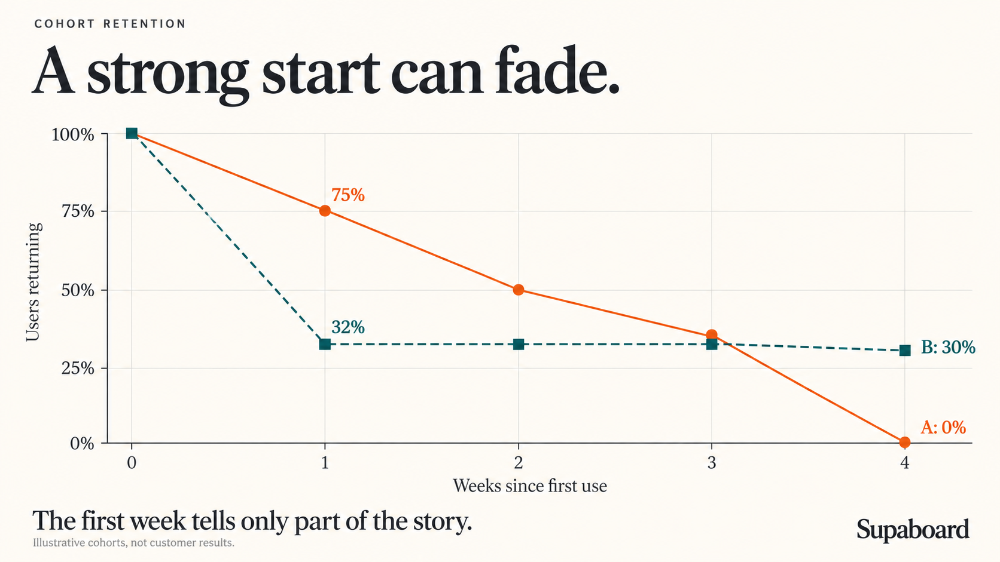

Product analytics
Cohort retention: a good first week can hide a bad trend
A strong first week can hide declining retention. Learn what cohort curves reveal about recurring value, product improvements, and sustainable SaaS growth.

Most SaaS founders think they understand retention. They have their percentages and can see how many people come back to use their product.
What those percentages don't tell them on their own is whether those people keep coming back.
I was one of those founders, until a lesson from David Lieb at Y Combinator changed the way I read those numbers. I stopped looking at benchmarks to tell me the product was doing well and started asking, “Are the cohorts stabilising?”
That question changes what you look for. A promising first week can give way to a cohort with nobody returning. A less impressive first week can leave you with people who return because the product has become useful to them. If you judge both groups too early, you can mistake the first for success and the second for failure.
Key takeaways
- A retention percentage needs a history: follow what happens to the same starting group over time.
- A sustained plateau suggests recurring use. Its duration, cohort size, and underlying behaviour determine how much confidence it deserves.
- Compare cohorts at the same age, then investigate why some users return and others don't.
The stronger start does not always last
Imagine two groups of people trying your product. After the first week, one appears much more likely to return. It would be tempting to build on that experience.
Give both groups more time, and the picture changes.
Two illustrative cohorts
The early lead disappears
The early leader keeps losing returning users. The other group settles into a much flatter pattern. That doesn't establish that anyone will stay forever, but it changes which experience deserves a closer look.
This is what cohort retention makes visible. A cohort is a group that starts with the same qualifying action during the same period. Following that group over time lets you see whether people continue to use the product after their initial encounter. Every curve starts at week zero, so you compare time since starting even when the groups joined on different dates.
A single percentage hides that history. The same rate can sit on a flattening curve or a declining one. Those situations call for different decisions.
A benchmark can still provide context. It cannot tell you which of those two situations you're in.
What are people returning to do?
The lines above count people repeating an action. What that action is determines whether the pattern tells you anything useful about your product.
Someone can log in, fail to find what they need, and leave. If that counts as a successful return, the chart may improve while the experience stays disappointing. The action you measure should be close enough to the product's value that repeating it means something.
At Supaboard, I use asking the AI a question about your business. People come to understand their business data, so asking a question is more meaningful for this analysis than opening the app. It is still a proxy: a question that receives an unhelpful answer does not demonstrate value delivered. The curve tells us who repeats the behaviour; those users can tell us why.
The same reasoning applies to timing. Business figures change, and users may have new questions the following week. Weekly measurement makes sense for this example. A news product might expect daily returns; a travel product may wait months for someone to need another booking. Measuring too soon can make a useful product look unsuccessful simply because its users don't need it yet.
Those choices define the people you are actually studying. A cohort of first-question users is different from a cohort of website visitors or signups. If people never reach that first question, this particular retention chart won't explain their experience. You need to examine that part of the journey separately.
A dashboard is useful when it makes the comparison fair
The practical value of a retention dashboard is that it keeps these definitions visible while you look for a pattern.
I used Datasites to put the retention triangle and curves in one place, using three inputs:
Action: asking the AI a business question.
Interval: weekly cohorts.
History: the last six complete weeks.
With the data connected, I could return to the same view as more observations became available. A chart you see once can show a promising pause; a view you revisit can show whether it lasts.
The example below follows six weekly cohorts. These dashboard values illustrate how to read retention; they are not benchmarks for your product.
| Cohort starts | Users | Week 0 | Week 1 | Week 2 | Week 3 | Week 4 | Week 5 |
|---|---|---|---|---|---|---|---|
| 31 Aug | 128 | 100% | 44% | 23% | 16% | 13% | 12% |
| 7 Sep | 137 | 100% | 46% | 26% | 18% | 15% | — |
| 14 Sep | 145 | 100% | 48% | 28% | 19% | — | — |
| 21 Sep | 152 | 100% | 50% | 30% | — | — | — |
| 28 Sep | 169 | 100% | 53% | — | — | — | — |
| 5 Oct | 176 | 100% | — | — | — | — | — |
A dash means the cohort has not reached that week yet.
Example dashboard
A longer history tells a different story
The longer history is still falling. Now hold the age constant and compare how each cohort did in its first week.
Compare the same cohort age
The first week is getting stronger
These charts reveal two things at once: early retention is stronger in newer cohorts, while lasting retention remains an open question. The encouraging bars do not cancel out the declining curve.
The definitions underneath it matter just as much as the visible numbers. Each percentage uses the original cohort size as its denominator and counts distinct returning people. Twenty questions from one person still count as one returning user. Someone can skip a week and come back later, so a cohort's percentage can rise as well as fall. Week zero is 100% because the qualifying action is how people enter the cohort.
The missing cells matter, too. Turning them into zeroes would make newer cohorts appear to have failed before they had the chance to return.
In this example, a week runs Monday to Sunday. That differs from a rolling seven-day window starting with each person's first action, a distinction Amplitude explains in its retention documentation. The dashboard also identifies first questions from the history available to it. If earlier activity is missing, “first recorded use” may not be someone's first-ever use. Those are limits on the conclusion, even when the chart looks convincing.
A plateau gives you people to learn from
A short segment, not a forecast
A returning group begins to emerge
A curve that settles around a similar level above zero for a sustained period suggests that some group has found a recurring use for the product. That is worth understanding before you turn the percentage into a target for everyone else.
What are those users trying to accomplish? Does the product fit a recurring task? Did they find something during onboarding that others missed? Are they arriving with a need the rest of the audience doesn't share?
The curve cannot answer those questions. It helps you find the people who can.
This is also why a couple of flat points deserve patience. A short pause in a decline is not enough to establish a durable pattern. Older cohorts have had more time to reveal whether the product continues to matter, which makes them especially useful when investigating stability.
Once you make changes, newer cohorts can help you assess whether more people are reaching that value. But compare them at the same age. If an older cohort retained 20% at week four and a newer one retains 30% at week four, that hypothetical improvement is worth investigating. Comparing the newer group's week one with the older group's week four would mix product experience with elapsed time.
Even a fair comparison doesn't establish the cause. Better onboarding is one possible explanation; attracting users with a stronger need is another. The next question is what changed between the groups and whether you have evidence connecting that change to their behaviour.
Keep the people count beside the rate while you investigate. Thirty percent of 10 users is three people. Thirty percent of 1,000 is 300. One person's return moves the smaller cohort sharply, so identical percentages can give you very different levels of confidence.
A retained group changes the growth equation
There is a commercial reason to care about the people who keep returning: new customers can add to an existing customer base when earlier customers stay. When they don't, part of acquisition goes toward replacing what the business has lost.
The scale can be smaller than the phrase “million-dollar business” suggests. At a hypothetical price of $1,000 per month, 83 paying customers represent $996,000 in annual recurring revenue. That is roughly $1 million ARR from a relatively small number of customers.
The arithmetic is simple. The assumptions are the work.
Those customers must pay that price and remain subscribed. Returning to use a feature doesn't establish either condition, and several active users may belong to one paying account. A product-retention curve needs to connect to paid conversion and subscription retention before it can support a revenue projection.
In the same hypothetical scenario, adding 10 retained paying customers each week for eight weeks gives 80 customers and $960,000 ARR, assuming all remain subscribed. It doesn't promise that acquisition pace, establish paid conversion, or mean the business collected $960,000 during those eight weeks.
The useful insight is that a modest group can matter enormously when the product continues to serve them. Understanding why they stay gives you something concrete to improve for the next group.
The question I want a retention review to answer
I want to leave a retention review knowing more about the product, not just whether its latest percentage looks respectable.
The curves show whether the same groups keep returning. The triangle helps distinguish stronger early retention from lasting retention. The people behind those patterns can explain which parts of the product have become useful and which obstacles are keeping others from getting there.
That gives the next product decision a basis: a specific group to understand, a possible explanation to test, and later cohorts to watch. Building the dashboard makes those questions easier to revisit. The value comes from what you learn when you do.
Are users getting enough value to return? And are we getting better at helping them find it?
Watch the cohort analysis